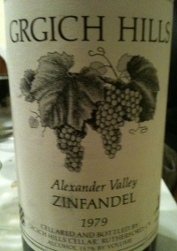

|
North America >
USA >
California >
Sonoma County >
Grgich Hills >
Alexander Valley Zinfandel
1979 Alexander Valley Zinfandel

Grgich Hills
Rutherford, CA
Price: $36
13.7% alcohol
750 ml

2009 tasting - A cloudy, brownish red with a moderate amount of precipitate, this Zinfandel has an aged bouquet with oak hints coupled to a light, chewy flavor with raspberry hints and a dry, long aftertaste with ancience to it.
2008 tasting - A dark red, this Zinfandel has an aged, fruity bouquet with fig hints and a tart, spicy, strong flavor. The aftertaste is complex, long and quite dry.
More about Zinfandel.
|
|